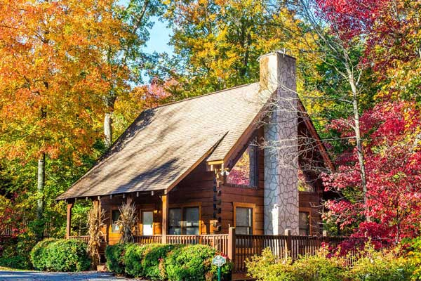
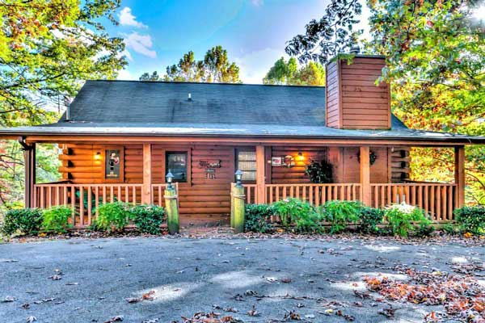
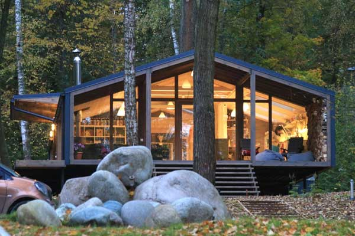
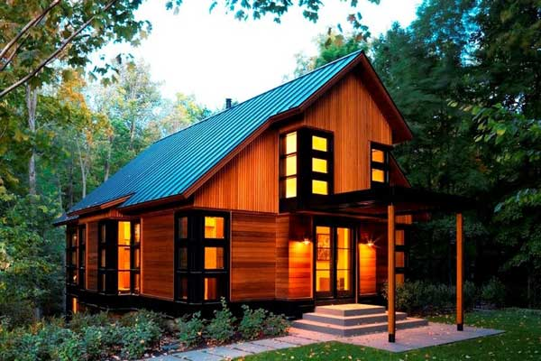
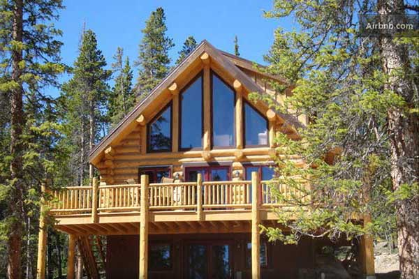
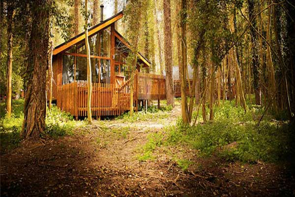

Experience Laid Back Luxury

Explore Our Cabins & Rates
1-3 Bedroom | $300
2-4 Bedroom | $400
4-6 Bedroom | $500
6-8 Bedroom | $600
8-10 Bedroom | $800
10-12 Bedroom | $1000
"This was our second stay at this lovely house, and, again, we greatly enjoyed it. The owners, Sandy and Monte, are excellent to work with, including confirmation of reservations, making arrangements for our arrival and timely refund of the damage deposit. We will definitely be repeat customers."
-Gerry O. January 2017
"This place is awesome! We had a mini stay last year with my father in law, who is no longer with us. Great memories and the people at White Birch were so accommodating.""
-Miranda Wagner Henneman
"We have stayed at your resort twice so far and each stay has created so many great memories. I think we are do for another family reunion!"
-Laura Fehr
5-STAR All-Inclusive Luxury Cabins
Surrounded by awe inspiring panoramic views of deep greens and blue landscapes, combined with unspoiled natural beauty of birch, spruce, maples, vibrant sunsets and calm summer breezes, this beautiful lake front resort, originally established in 1932, is proud to be offering a truly unique hi-end boutique resort experience, like no other in Minnesota. This BRAND NEW 5-STAR ALL-INCLUSIVE resort in Minnesota now offers luxury vacation homes and cabin accommodations overlooking Blackduck Lake and the “lazy” knee deep Blackduck River, just minutes north of Bemidji, 3 ½ hours north of Minneapolis, 3 hours east of Fargo and 1 hour south of Canada.
Minnesota Vacations-Incredible Packages
The White Birch Resort experience is for those individuals who seek and appreciate a well-deserved taste of luxury resorts while on vacation. With a relaxed approach to luxury for groups of all ages and sizes, guests are excited and guaranteed to enjoy 2600 acres of four season's recreational adventure to explore, accompanied with endless and unmatched resort amenities minus the crowds. As many guests comment, "we feel as though we are in our own private custom lake home with beautiful refined style and decor."
Enjoy 90 local Attractions and Activities
The resort has more than 30 ALL-INCLUSIVE on resort experiences and activities for guests to enjoy. Guests can take advantage of all forms of lake recreation, such as, fishing kayaking, canoeing, boating and swimming in the summer to ice fishing, snowmobiling, snow shoeing and cross-country skiing in the winter. Even though WBR has ample amounts of on resort entertainment, rest assured, the area also features countless access to over 90 local attraction and activities, such as golfing, hiking, biking, skiing, snow tubing, site seeing, shopping and much more, if you so choose to explore off the resort. White Birch Resort is supported by and as close as, five miles to surrounding tourist communities of Blackduck, Bemidji, Upper Red Lake, Park Rapids, Grand Rapids and Walker. Sometimes guests even choose White Birch Resort as their home base because accommodations and amenities are so great!
Happy Customer Reviews
"Lake resorts in MN are always what families look for when going on vacation! Guests are guaranteed to receive the most unmatched complete All-Inclusive vacation package for any small privately owned and operated Minnesota luxury resort, all while receiving incredible rates!" - Guest Comment